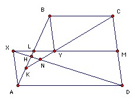

ABCD is a quadrilateral with BC parallel to AD. M is the midpoint of CD, P is the midpoint of MA and Q is the midpoint of MB. The lines DP and CQ meet at N. Prove that N is inside or on the triangle ABC.
Solution
Both the question and the official solution are wrong. First, I give the official solution. It is not easy to see what is wrong.
Let L be the midpoint of AB. If AD = BC, N = L is on the boundary of triangle ABM. So without loss of generality we may assume AD > BC. Complete the parallelograms MDAX and MCBY. Then Y lies between L and M, and L lies between X and M. Note that N is the intersection of the lines DX and CY. Let the lines DX, CY meet AB at H, K respectively. Triangle HAD is similar to triangle HLX, so HL/XL = HA/AD. Similarly, triangle KLY is similar to triangle KBC, so KL/LY = KB/BC. Hence HL/LX = HA/AD < LA/AD < KB/AD < KB/BC = KL/LY. [But AXL is congruent to BYL, so LX = LY.] Hence HL < KL. It follows that N is inside triangle ABM. [N lies on the open segment KY, which lies entirely inside ABM.]

To see what is wrong. Click here.

© John Scholes
jscholes@kalva.demon.co.uk
22 Sep 2002
Last corrected/updated 23 Aug 03